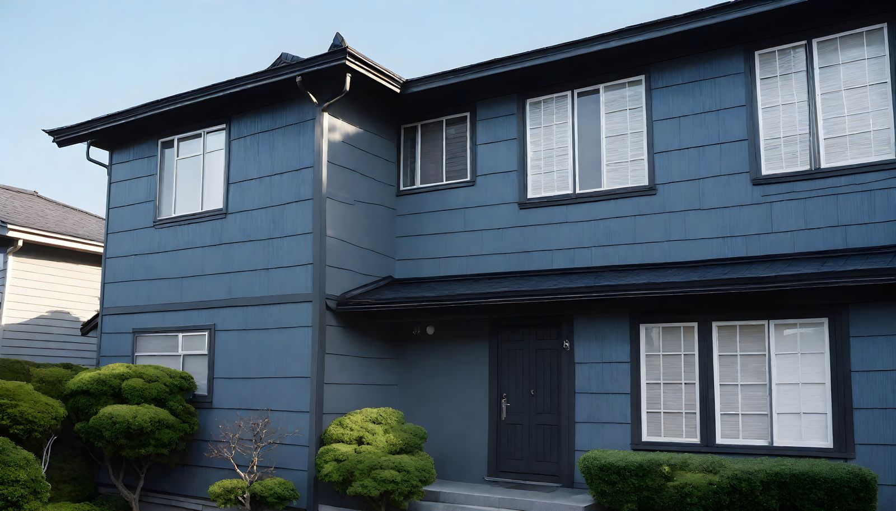
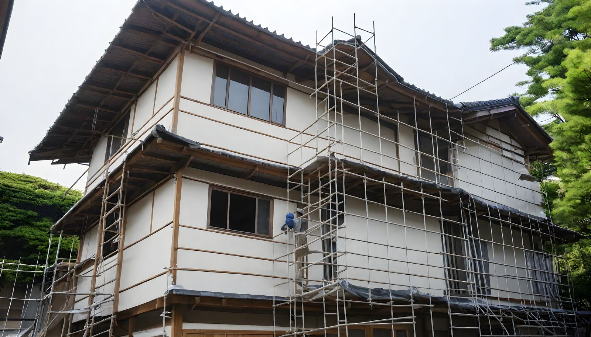
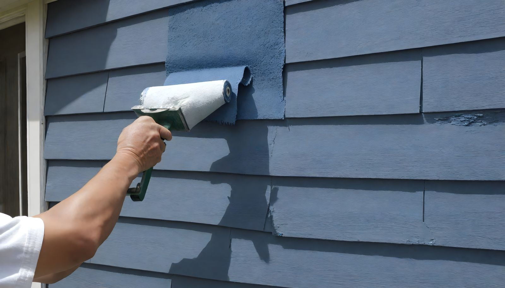
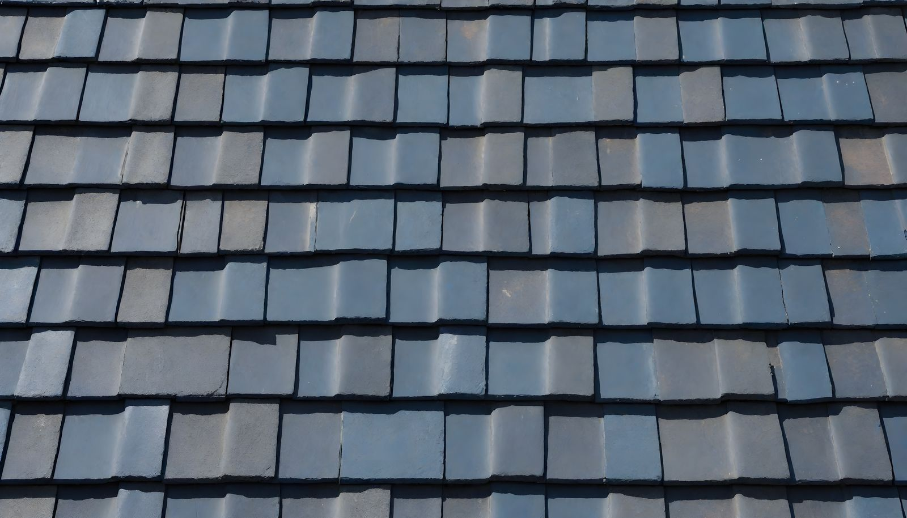

外壁と屋根の塗り替え、
下請けに出さない塗装店です。
見積りに来た職人が、そのまま足場に上がって塗ります。30坪の家で工期はおよそ12日。費用の目安は、坪数と塗料を選ぶだけで出ます。
無料で見積りを頼む
費用と持ちの目安を出す
家の広さと塗料を選ぶと、今回の費用と、これから30年で何回塗ることになるかが出ます。現地を見る前の大まかな数字です。
今回の費用(外壁、ラジカル制御形)
79〜96万円
- 塗る面積の目安
- 外壁 119㎡
- 持つ年数の目安
- 12〜15年
- 30年で塗る回数
- 3回 今回を含む
- 30年の総額
- 237〜288万円
同じ条件で、30年の総額を塗料ごとに比べると
この条件は、見積りのページの「概算の条件」欄に自動で写ります。この条件で見積りを頼む
計算のしかた 外壁の面積＝延床坪×3.3×1.2、屋根の面積＝延床坪×3.3×0.6。
費用＝足場(外壁の面積×1.4×1,100円)＋洗浄と養生(塗る面積×400円)＋外壁の付帯部とコーキング(外壁の面積×1,800〜2,600円)＋屋根の縁切り(屋根の面積×500〜700円)＋塗る面積×塗料の㎡単価。
30年で塗る回数＝30÷持つ年数の真ん中を切り上げ。30年の総額は今の値段のまま掛けています。金額は税込、1万円未満は下を切り捨て、上を切り上げ。
塗料ごとの違い
延床30坪(外壁の面積およそ119㎡)の2階建てで、足場から3回塗りまで含めた費用です。上のシミュレーターと同じ計算です。
| 塗料 | 持つ年数 | 外壁30坪 | 外壁の㎡単価 | 屋根の㎡単価 | 汚れにくさ | 保証 | 向いている家 |
|---|---|---|---|---|---|---|---|
| アクリルシリコン | 10〜12年 | 75〜91万円 | 2,600〜3,100円 | 2,900〜3,400円 | ふつう | 5年 | 10年以内に売る、建て替える予定がある |
| ラジカル制御形 | 12〜15年 | 79〜96万円 | 2,900〜3,500円 | 3,200〜3,800円 | やや強い | 7年 | 費用と持ちのつり合いを取りたい。相談がいちばん多い塗料です |
| フッ素 | 15〜18年 | 90〜109万円 | 3,900〜4,600円 | 4,300〜5,000円 | 強い | 8年 | 日当たりが強い南面が広い、潮風を受ける |
| 無機 | 18〜22年 | 99〜119万円 | 4,600〜5,400円 | 5,000〜5,900円 | とても強い | 10年 | 次の塗り替えをできるだけ先にしたい |
屋根を一緒に塗ると、足場代(30坪で約18万円)が1回で済みます。ひび割れやコーキングの傷みが多いと、補修の分だけ上がります。窯業系サイディングの継ぎ目は、塗料の年数に合わせて打ち替え用の材料を選びます。
色見本で家に当ててみる
色を押すと、絵の家の壁と屋根の色が変わります。帯と玄関ドアは屋根と同じ色です。
壁 72-60D 青みのグレー／屋根 N-20 黒
画面の色と塗った壁の色は同じに見えません。広い面に塗ると、小さな見本より明るく鮮やかに見えます。決めるときはA4の見本板を実際の壁に当て、晴れの日と曇りの日の両方で見ていただきます。
塗り替えどきのサイン
家のまわりを一周して、北側と日当たりの強い南側を見てください。いちばん急ぐものに合わせて時期を決めます。
すぐ雨水が入り始めている1〜2年内塗膜の守りが切れかけ様子見次の点検で見ればよい
-
手に白い粉がつく(チョーキング)
壁を指でこすると白や壁の色の粉がつきます。塗料の樹脂が日光で分解されて、色の粉だけが残った状態です。
1〜2年内 -
幅0.3mm以上のひび割れ
名刺の角が差し込めるくらいの幅なら0.3mmを超えています。ひびから雨水が入り、壁の中の木や鉄を傷めます。髪の毛ほどの細いひびなら塗装で埋まります。
すぐ -
継ぎ目のコーキングの割れ
外壁の板と板の間のゴムのような部分です。細かく割れたり、壁からはがれて隙間が見えたりしたら、そこから水が入ります。
すぐ -
北側の緑のコケ、黒いカビ
日の当たらない面と地面に近い所に出ます。表面だけなら洗えば落ちますが、塗膜が水をはじかなくなってきた合図でもあります。広がってきたら1〜2年内に。
様子見 -
塗膜のふくれ、はがれ
塗った膜が風船のようにふくらんでいる所は、裏に水か湿気が回っています。押すとぶよっとします。一部でも見つけたら、ほかの面も見ておきます。
1〜2年内
工事の12日間
延床30坪で外壁を塗る場合の、晴れが続いたときの日程です。屋根も一緒なら2〜3日増えます。
- 足場とメッシュシート1日目
- 高圧洗浄2日目
- 下地補修とコーキング3〜4日目
- 養生(窓や車を覆う)5日目
- 下塗り6日目
- 中塗り7日目
- 上塗り8日目
- 付帯部(雨樋や破風)9〜10日目
- 一緒に一周して確認11日目
- 足場を外して片付け12日目
- 雨の日のための予備13〜14日目
準備と片付け塗る工程雨の日のための予備
雨の日は塗りません。雨の日と、湿度が85%を超える日は塗料が乾かず、あとでふくれの原因になります。その日から後ろの工程を1日ずつずらし、12日の後ろに予備を2日とってあります。日数が延びても足場代は変わりません。順延はその日の朝7時までにお電話します。


3回塗りの断面
同じ壁に3回、乾く時間をあけて重ねます。厚みが揃って初めて、塗料の年数どおりに持ちます。
- 下塗り 壁に吸い込ませて、上の層をくっつける接着の層。傷んだ壁ほど多めに吸います。
- 中塗り 厚みをつける層。上塗りと少しだけ色を変えて、塗り残しを見分けます。
- 上塗り 雨と紫外線を受け止める表面の層。仕上がりの色になります。
足場とメッシュシート
1日目に組みます。塗料や洗浄の水がお隣へ飛ばないよう、外側を網で覆います。
高圧洗浄
2日目。古い塗膜の粉とコケを水で落とし、丸1日乾かします。ここを急ぐと、新しい塗料がはがれます。
下地補修とコーキング
3〜4日目。ひびはV字に削って埋め、継ぎ目のコーキングは古いものを抜いて新しく打ち直します。
保証と点検、ご近所へのあいさつ
塗り終わってからの年数と、工事の前後にすることです。
保証の年数と点検の日
| 塗料 | 外壁の保証 | 屋根の保証 |
|---|---|---|
| アクリルシリコン | 5年 | 3年 |
| ラジカル制御形 | 7年 | 5年 |
| フッ素 | 8年 | 6年 |
| 無機 | 10年 | 7年 |
はがれ、ふくれ、色の大きなむらが保証の対象です。地震や台風で割れた所、あとから付けた物の穴は対象外になります。
- 引き渡しの日保証書と、工程ごとの写真をまとめた冊子をお渡しします。
- 1年目と3年目無料で点検に伺います。こちらから日程のお電話をします。
- そのあと保証が切れる年まで2年おき気になる所があれば、点検の日を待たずに呼んでください。
ご近所へのあいさつ
足場の音と、洗浄の水しぶき、塗料のにおいが出る工事です。あいさつは営業ではなく、現場に立つ職人が伺います。
- 着工の7日前両隣とお向かい、裏の家へ。工程表とタオルを持って伺います。留守なら手紙を入れます。
- 洗浄の前日水しぶきが飛ぶ側のお宅に、洗濯物と車のことをお声がけします。
- 工事中職人の車は近くの駐車場に停めます。前の道に置きっぱなしにしません。
- 足場を外した日同じお宅へ、終わりのごあいさつに伺います。
施工実績
2026年に塗らせていただいた家から8件です。工期は足場を組んだ日から外した日まで。
| 地区 | 築年数 | 延床 | 塗った場所 | 塗料 | 色(壁／屋根) | 工期 | 費用(税込) |
|---|---|---|---|---|---|---|---|
| 朝日台 | 21年 | 32坪 | 外壁と屋根 | ラジカル制御形 | 72-60D／N-20 | 15日 雨で1日延長 | 118万円 |
| 川添町 | 13年 | 28坪 | 外壁 | アクリルシリコン | 22-85B | 11日 | 77万円 |
| 桜木原 | 18年 | 36坪 | 外壁と屋根 | フッ素 | N-60／75-30D | 15日 | 158万円 |
| 白鷺町 | 24年 | 41坪 | 外壁 | 無機 | N-25 | 13日 | 149万円 |
| 椿ヶ丘 | 27年 | 30坪 | 屋根 | ラジカル制御形 | —／N-20 | 6日 | 45万円 |
| 松葉台 | 16年 | 34坪 | 外壁と屋根 | ラジカル制御形 | 25-70D／15-30D | 16日 雨で2日延長 | 131万円 |
| 奥田原 | 11年 | 26坪 | 外壁 | アクリルシリコン | N-90 | 10日 | 71万円 |
| 柚木町 | 20年 | 38坪 | 外壁と屋根 | フッ素 | 45-60D／45-30H | 16日 | 167万円 |
塗り終わったお客様から
写真はイメージです
見積りに来た人が、本当にそのまま塗りに来ました。毎日夕方に、その日やった所を写真つきで知らせてくれたので、仕事で留守がちでも不安はありませんでした。下塗りの白い壁の写真まで残っているのは、ここだけだと思います。
色はA4の板を壁に当てて、晴れの日と曇りの日に見せてもらいました。画面より明るく見えると言われて一段暗い色にしたのが正解でした。

写真はイメージです
よそでは屋根の葺き替えを勧められましたが、割れは3枚だけなので差し替えと塗装で足りると言われ、40万円ほど安く済みました。
資格と会社のこと
職人7人の塗装店です。営業だけの社員はいません。
資格と許可
- 一級塗装技能士 3人国家資格。実技と学科の試験に受かった職人です
- 二級塗装技能士 2人
- 建設業許可 福岡県知事許可(般-04)第000000号塗装工事業
- 足場の組立て等作業主任者 2人有機溶剤作業主任者 2人
- 工事中の事故に備える賠償責任保険に加入朝日台塗装業協議会 会員
会社概要
- 屋号
- アオバ塗装
- 代表
- 青葉 恒一(一級塗装技能士)
- 所在地
- 福岡市 朝日台(作業場と資材置き場)
- 創業
- 2002年
- 人数
- 職人7人、事務1人
- 施工
- 1,380棟あまり(2026年10月まで)
- 電話
- 092-000-0000 9:00〜19:00 年中無休
- 対応地域
- 福岡市 朝日台・川添町・桜木原・白鷺町
椿ヶ丘・松葉台・奥田原・柚木町 ほか
よくある質問
見積りの場でよく聞かれることです。
見積りのあとに断っても大丈夫ですか
大丈夫です。見積りは無料で、断られても理由をお聞きすることはありません。ほかの店の見積りと並べて比べていただくのも歓迎です。
工事のあいだ、家にいないといけませんか
いなくても進められます。窓を閉めていただく日が2〜3日あるので、その日は前日にお知らせします。毎日の作業は夕方に写真で報告します。
雨が続いたら、工期はどうなりますか
雨の日と湿度の高い日は塗らずに後ろへずらします。予備を2日とってあり、それを超えても追加の費用はかかりません。梅雨の6〜7月は日数に余裕を見て日程を組みます。
色見本と仕上がりが違って見えることはありますか
あります。広い面に塗ると、小さな見本より明るく鮮やかに見えます。迷ったときは、壁の目立たない所に1㎡ほど試し塗りをしてから決められます。
屋根だけ、一部の面だけでも頼めますか
頼めます。ただし2階の高さは足場が要るので、足場代はかかります。数年以内に外壁も塗る予定なら、まとめた方が足場1回分安くなります。
支払いはいつですか
工事が終わって、一緒に家を一周して確認した後に一括でお願いしています。着手金はいただいていません。分割を希望される方には、リフォームローンの窓口をご案内します。
火災保険で無料になると言われたのですが
台風や雹で壊れた所は保険の対象になる場合がありますが、年数による傷みは対象外です。「保険で無料で塗れる」と訪ねてくる業者とのトラブルが増えているので、契約の前にご相談ください。
無料で見積りを頼む
壁と屋根を見て、その場で劣化の具合をお伝えします。見積りのあと断られても大丈夫です。2日以内にお電話で日程を決めます。